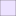

<!doctype html>
<html lang="en">
    <head>
        <meta charset="utf-8">
        <meta http-equiv="X-UA-Compatible" content="IE=edge">
        <meta name="viewport" content="initial-scale=1,user-scalable=no,maximum-scale=1,width=device-width">
        <meta name="mobile-web-app-capable" content="yes">
        <meta name="apple-mobile-web-app-capable" content="yes">
        <link rel="stylesheet" href="css/leaflet.css">
        <link rel="stylesheet" href="css/qgis2web.css"><link rel="stylesheet" href="css/fontawesome-all.min.css">
        <link rel="stylesheet" href="css/leaflet-measure.css">
        <style>
        html, body, #map {
            width: 100%;
            height: 100%;
            padding: 0;
            margin: 0;
        }
        </style>
        <title></title>
    </head>
    <body>
        <div id="map">
        </div>
        <script src="js/qgis2web_expressions.js"></script>
        <script src="js/leaflet.js"></script>
        <script src="js/leaflet.rotatedMarker.js"></script>
        <script src="js/leaflet.pattern.js"></script>
        <script src="js/leaflet-hash.js"></script>
        <script src="js/Autolinker.min.js"></script>
        <script src="js/rbush.min.js"></script>
        <script src="js/labelgun.min.js"></script>
        <script src="js/labels.js"></script>
        <script src="js/leaflet-measure.js"></script>
        <script src="data/Crdobancalendar_1.js"></script>
        <script src="data/Crdobancalendaroutlines_2.js"></script>
        <script>
        var highlightLayer;
        function highlightFeature(e) {
            highlightLayer = e.target;

            if (e.target.feature.geometry.type === 'LineString') {
              highlightLayer.setStyle({
                color: '#ffff00',
              });
            } else {
              highlightLayer.setStyle({
                fillColor: '#ffff00',
                fillOpacity: 1
              });
            }
            highlightLayer.openPopup();
        }
        var map = L.map('map', {
            zoomControl:true, maxZoom:28, minZoom:1
        }).fitBounds([[35.4699491933507,-11.853122670846904],[44.410049098432,2.0298209317552924]]);
        var hash = new L.Hash(map);
        map.attributionControl.setPrefix('<a href="https://github.com/tomchadwin/qgis2web" target="_blank">qgis2web</a> &middot; <a href="https://leafletjs.com" title="A JS library for interactive maps">Leaflet</a> &middot; <a href="https://qgis.org">QGIS</a>');
        var autolinker = new Autolinker({truncate: {length: 30, location: 'smart'}});
        var measureControl = new L.Control.Measure({
            position: 'topleft',
            primaryLengthUnit: 'meters',
            secondaryLengthUnit: 'kilometers',
            primaryAreaUnit: 'sqmeters',
            secondaryAreaUnit: 'hectares'
        });
        measureControl.addTo(map);
        document.getElementsByClassName('leaflet-control-measure-toggle')[0]
        .innerHTML = '';
        document.getElementsByClassName('leaflet-control-measure-toggle')[0]
        .className += ' fas fa-ruler';
        var bounds_group = new L.featureGroup([]);
        function setBounds() {
        }
        map.createPane('pane_EsriGraylight_0');
        map.getPane('pane_EsriGraylight_0').style.zIndex = 400;
        var layer_EsriGraylight_0 = L.tileLayer('http://services.arcgisonline.com/ArcGIS/rest/services/Canvas/World_Light_Gray_Base/MapServer/tile/{z}/{y}/{x}', {
            pane: 'pane_EsriGraylight_0',
            opacity: 1.0,
            attribution: '',
            minZoom: 1,
            maxZoom: 28,
            minNativeZoom: 0,
            maxNativeZoom: 16
        });
        layer_EsriGraylight_0;
        map.addLayer(layer_EsriGraylight_0);
        function pop_Crdobancalendar_1(feature, layer) {
            layer.on({
                mouseout: function(e) {
                    for (i in e.target._eventParents) {
                        e.target._eventParents[i].resetStyle(e.target);
                    }
                    if (typeof layer.closePopup == 'function') {
                        layer.closePopup();
                    } else {
                        layer.eachLayer(function(feature){
                            feature.closePopup()
                        });
                    }
                },
                mouseover: highlightFeature,
            });
            var popupContent = '<table>\
                    <tr>\
                        <td colspan="2">' + (feature.properties['id'] !== null ? autolinker.link(feature.properties['id'].toLocaleString()) : '') + '</td>\
                    </tr>\
                    <tr>\
                        <th scope="row">Name</th>\
                        <td>' + (feature.properties['Name'] !== null ? autolinker.link(feature.properties['Name'].toLocaleString()) : '') + '</td>\
                    </tr>\
                    <tr>\
                        <th scope="row">Mention in</th>\
                        <td>' + (feature.properties['Mention in'] !== null ? autolinker.link(feature.properties['Mention in'].toLocaleString()) : '') + '</td>\
                    </tr>\
                    <tr>\
                        <th scope="row">Mention on</th>\
                        <td>' + (feature.properties['Mention on'] !== null ? autolinker.link(feature.properties['Mention on'].toLocaleString()) : '') + '</td>\
                    </tr>\
                    <tr>\
                        <th scope="row">What</th>\
                        <td>' + (feature.properties['What'] !== null ? autolinker.link(feature.properties['What'].toLocaleString()) : '') + '</td>\
                    </tr>\
                    <tr>\
                        <th scope="row">Literature</th>\
                        <td>' + (feature.properties['Literature'] !== null ? autolinker.link(feature.properties['Literature'].toLocaleString()) : '') + '</td>\
                    </tr>\
                </table>';
            layer.bindPopup(popupContent, {maxHeight: 400});
        }

        function style_Crdobancalendar_1_0(feature) {
            switch(String(feature.properties['Mention in'])) {
                case 'CCA':
                    return {
                pane: 'pane_Crdobancalendar_1',
                radius: 5.0,
                opacity: 1,
                color: 'rgba(35,35,35,1.0)',
                dashArray: '',
                lineCap: 'butt',
                lineJoin: 'miter',
                weight: 1,
                fill: true,
                fillOpacity: 1,
                fillColor: 'rgba(158,228,255,1.0)',
                interactive: true,
            }
                    break;
                case 'CCA/CCL':
                    return {
                pane: 'pane_Crdobancalendar_1',
                radius: 5.0,
                opacity: 1,
                color: 'rgba(35,35,35,1.0)',
                dashArray: '',
                lineCap: 'butt',
                lineJoin: 'miter',
                weight: 1,
                fill: true,
                fillOpacity: 1,
                fillColor: 'rgba(188,215,185,1.0)',
                interactive: true,
            }
                    break;
                case 'CCL':
                    return {
                pane: 'pane_Crdobancalendar_1',
                radius: 5.0,
                opacity: 1,
                color: 'rgba(35,35,35,1.0)',
                dashArray: '',
                lineCap: 'butt',
                lineJoin: 'miter',
                weight: 1,
                fill: true,
                fillOpacity: 1,
                fillColor: 'rgba(220,200,255,1.0)',
                interactive: true,
            }
                    break;
            }
        }
        map.createPane('pane_Crdobancalendar_1');
        map.getPane('pane_Crdobancalendar_1').style.zIndex = 401;
        map.getPane('pane_Crdobancalendar_1').style['mix-blend-mode'] = 'normal';
        var layer_Crdobancalendar_1 = new L.geoJson(json_Crdobancalendar_1, {
            attribution: '',
            interactive: true,
            dataVar: 'json_Crdobancalendar_1',
            layerName: 'layer_Crdobancalendar_1',
            pane: 'pane_Crdobancalendar_1',
            onEachFeature: pop_Crdobancalendar_1,
            pointToLayer: function (feature, latlng) {
                var context = {
                    feature: feature,
                    variables: {}
                };
                return L.circleMarker(latlng, style_Crdobancalendar_1_0(feature));
            },
        });
        bounds_group.addLayer(layer_Crdobancalendar_1);
        map.addLayer(layer_Crdobancalendar_1);
        function pop_Crdobancalendaroutlines_2(feature, layer) {
            layer.on({
                mouseout: function(e) {
                    for (i in e.target._eventParents) {
                        e.target._eventParents[i].resetStyle(e.target);
                    }
                    if (typeof layer.closePopup == 'function') {
                        layer.closePopup();
                    } else {
                        layer.eachLayer(function(feature){
                            feature.closePopup()
                        });
                    }
                },
                mouseover: highlightFeature,
            });
            var popupContent = '<table>\
                    <tr>\
                        <td colspan="2">' + (feature.properties['id'] !== null ? autolinker.link(feature.properties['id'].toLocaleString()) : '') + '</td>\
                    </tr>\
                    <tr>\
                        <th scope="row">Name</th>\
                        <td>' + (feature.properties['Name'] !== null ? autolinker.link(feature.properties['Name'].toLocaleString()) : '') + '</td>\
                    </tr>\
                    <tr>\
                        <th scope="row">Mention in</th>\
                        <td>' + (feature.properties['Mention in'] !== null ? autolinker.link(feature.properties['Mention in'].toLocaleString()) : '') + '</td>\
                    </tr>\
                    <tr>\
                        <th scope="row">Mention on</th>\
                        <td>' + (feature.properties['Mention on'] !== null ? autolinker.link(feature.properties['Mention on'].toLocaleString()) : '') + '</td>\
                    </tr>\
                    <tr>\
                        <th scope="row">What</th>\
                        <td>' + (feature.properties['What'] !== null ? autolinker.link(feature.properties['What'].toLocaleString()) : '') + '</td>\
                    </tr>\
                    <tr>\
                        <th scope="row">Literature</th>\
                        <td>' + (feature.properties['Literature'] !== null ? autolinker.link(feature.properties['Literature'].toLocaleString()) : '') + '</td>\
                    </tr>\
                </table>';
            layer.bindPopup(popupContent, {maxHeight: 400});
        }

        function style_Crdobancalendaroutlines_2_0(feature) {
            switch(String(feature.properties['Mention in'])) {
                case 'CCL':
                    return {
                pane: 'pane_Crdobancalendaroutlines_2',
                opacity: 1,
                color: 'rgba(35,35,35,1.0)',
                dashArray: '',
                lineCap: 'butt',
                lineJoin: 'miter',
                weight: 1.0, 
                fill: true,
                fillOpacity: 1,
                fillColor: 'rgba(220,200,255,1.0)',
                interactive: true,
            }
                    break;
            }
        }
        map.createPane('pane_Crdobancalendaroutlines_2');
        map.getPane('pane_Crdobancalendaroutlines_2').style.zIndex = 402;
        map.getPane('pane_Crdobancalendaroutlines_2').style['mix-blend-mode'] = 'normal';
        var layer_Crdobancalendaroutlines_2 = new L.geoJson(json_Crdobancalendaroutlines_2, {
            attribution: '',
            interactive: true,
            dataVar: 'json_Crdobancalendaroutlines_2',
            layerName: 'layer_Crdobancalendaroutlines_2',
            pane: 'pane_Crdobancalendaroutlines_2',
            onEachFeature: pop_Crdobancalendaroutlines_2,
            style: style_Crdobancalendaroutlines_2_0,
        });
        bounds_group.addLayer(layer_Crdobancalendaroutlines_2);
        map.addLayer(layer_Crdobancalendaroutlines_2);
        var baseMaps = {};
        L.control.layers(baseMaps,{'Córdoban calendar outlines<br /><table><tr><td style="text-align: center;"></td><td>CCL</td></tr></table>': layer_Crdobancalendaroutlines_2,'Córdoban calendar<br /><table><tr><td style="text-align: center;"></td><td>CCA</td></tr><tr><td style="text-align: center;"></td><td>CCA/CCL</td></tr><tr><td style="text-align: center;"></td><td>CCL</td></tr></table>': layer_Crdobancalendar_1,"Esri Gray (light)": layer_EsriGraylight_0,}).addTo(map);
        setBounds();
        resetLabels([layer_Crdobancalendar_1,layer_Crdobancalendaroutlines_2]);
        map.on("zoomend", function(){
            resetLabels([layer_Crdobancalendar_1,layer_Crdobancalendaroutlines_2]);
        });
        map.on("layeradd", function(){
            resetLabels([layer_Crdobancalendar_1,layer_Crdobancalendaroutlines_2]);
        });
        map.on("layerremove", function(){
            resetLabels([layer_Crdobancalendar_1,layer_Crdobancalendaroutlines_2]);
        });
        </script>
    </body>
</html>
